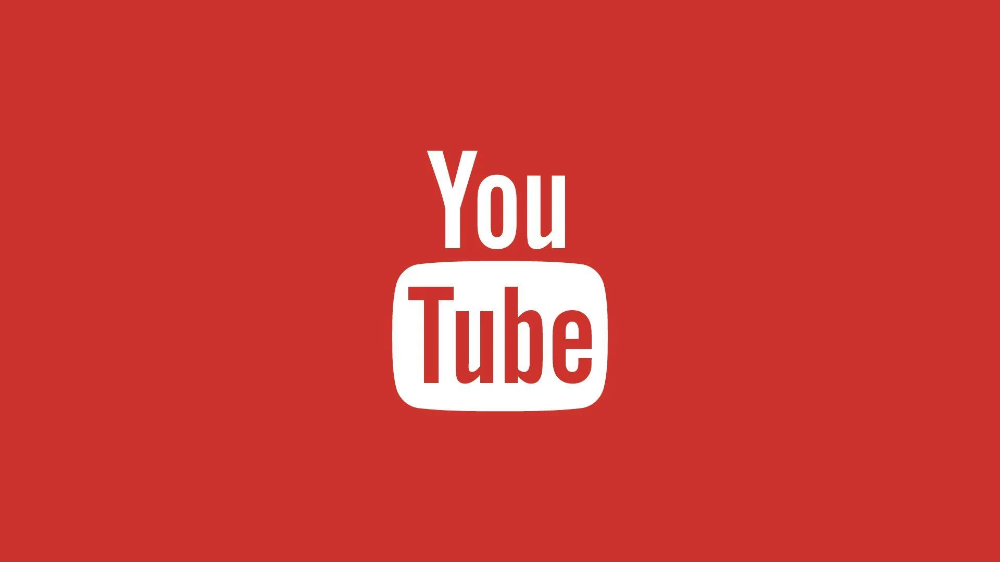
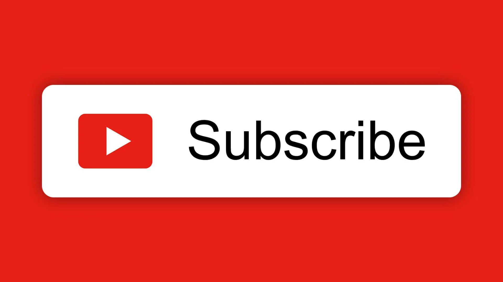
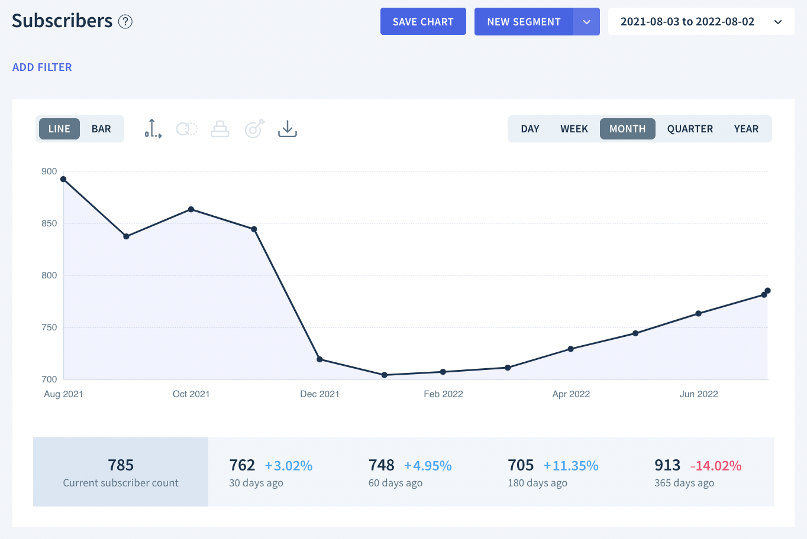

Most Subscribed YouTube Channels
YouTube is the largest video-sharing platform in the world, boasting over 2 billion monthly active users. One of the most popular features of YouTube is the ability to subscribe to channels and receive their content regularly. Subscribers are users who have clicked on the “Subscribe” button and opted to receive updates when new videos are uploaded. This feature allows creators to build a dedicated audience and keep them engaged with their content.
The Growth of YouTube
Since its inception in 2005, YouTube has transformed the way people consume video content. What started as a platform for users to share personal videos has evolved into a multifaceted ecosystem where content creators, brands, and even traditional media companies converge. YouTube has become a critical marketing tool, a source of entertainment, and a platform for education.
Top YouTube Channels by Subscribers
As of 2024, here are some of the most subscribed channels on YouTube:
- T-Series - The Indian music and film production company has the highest number of subscribers, with over 250 million subscribers. T-Series is known for its vast collection of Bollywood music videos and movie trailers, appealing to a broad audience in India and around the world.
- Cocomelon - Nursery Rhymes - A channel focused on educational children's songs and nursery rhymes, Cocomelon has over 170 million subscribers. Its colorful animations and catchy tunes have made it a favorite among kids, helping them learn numbers, colors, and social skills.
- SET India - Sony Entertainment Television India (SET India) features a variety of Indian television shows and entertainment content, attracting over 150 million subscribers. The channel provides full episodes and clips from popular series, catering to a wide audience in the Indian subcontinent.
- MrBeast - Known for his extravagant giveaways and philanthropic endeavors, MrBeast has rapidly gained popularity and currently boasts over 200 million subscribers. His engaging challenges and generosity have captivated millions, making him a household name on YouTube.
- PewDiePie - Once the most subscribed individual YouTuber, PewDiePie is known for his gaming commentary and vlogs, with a subscriber count of over 110 million. His unique personality and humor have garnered a loyal fanbase, and he continues to be a significant influencer in the gaming community.
The Impact of Subscribers
Having a large number of subscribers is not just about popularity; it significantly impacts a channel’s revenue and visibility. Channels with more subscribers are more likely to appear in YouTube's algorithm-driven recommendations, increasing their reach and potential earnings through ads, sponsorships, and merchandise sales.
Monetization and Revenue Streams
YouTube offers various monetization options for creators, including:
- Ad Revenue: Creators earn money from ads displayed on their videos, with earnings varying based on factors like viewer engagement and geographic location.
- Channel Memberships: Subscribers can pay a monthly fee for special perks like exclusive content, badges, and emojis.
- Sponsorships: Many creators partner with brands to promote products in their videos, often leading to significant income.
- Merchandise Sales: Creators often sell branded merchandise to their fans, creating an additional revenue stream.
Emerging Trends in YouTube Content Creation
The landscape of YouTube content is constantly evolving. As trends change and new technologies emerge, creators adapt their strategies to engage viewers. Some current trends include:
- Short-form Content: YouTube Shorts has gained popularity, allowing creators to share quick, engaging videos to attract viewers' attention.
- Live Streaming: Many channels now incorporate live streams, offering real-time interaction with fans and creating a sense of community.
- Educational Content: Tutorials and educational videos continue to grow in popularity, appealing to users seeking to learn new skills or concepts.
- Vlogging: Personal vlogs allow creators to share their daily lives and experiences, fostering a closer connection with their audience.
Conclusion
YouTube continues to grow as a platform, with more users joining every day. The channels listed above exemplify how creators can leverage this platform to build communities, share their passions, and generate income. As trends shift and new creators emerge, it will be exciting to see which channels will rise to the top in the coming years.
Future of YouTube and Content Creation
As we look to the future, YouTube is likely to become even more integrated into our daily lives. The platform's ability to adapt and innovate will be key to its longevity and relevance. With advancements in technology, such as virtual and augmented reality, the way we consume content may undergo significant changes, providing even more opportunities for creators.
References
For further information on YouTube statistics and trends, you can visit: